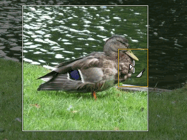

There are many reasons to crop an image; for example, fitting an
image to fill a frame, removing a portion of the background to emphasize
the subject, etc. There are two methods to activate the crop tool. Click
the
 button in the Toolbox, or use
→ → in the image window. This changes the cursor and allow you to
click and drag a rectangular shape. The button in the toolbox is the
easiest way to get to any of the tools.
button in the Toolbox, or use
→ → in the image window. This changes the cursor and allow you to
click and drag a rectangular shape. The button in the toolbox is the
easiest way to get to any of the tools.
Click on one corner of the desired crop area and drag your mouse to create the crop rectangle. You don't have to be accurate as you can change the exact shape of the rectangle later.
Figure 3.22. Dialog for Cropping


After completing the click and drag motion, a rectangle with special regions is shown on the canvas. As the cursor is moved over the different areas of the selected crop area, the cursor changes. You can then drag the rectangle's corners or edges to change the dimensions of the selected area. As shown in the figure above, as the crop area is resized, the dimensions and ratio are shown in the status bar. Double-click inside the rectangle or press Enter to complete cropping. See Section 4.4, “Crop” for more information on cropping in GIMP.
If you would like to crop the image in a specific aspect ratio, such as a square, make sure the tool options are visible ( → → ). In the Tool Options dockable, check the mark next to Fixed Aspect Ratio. Type the desired aspect ratio in the text field below, such as “1:1”.
You also have buttons to change the aspect from landscape to portrait. After you set the aspect ratio, drag one of the corners of the crop rectangle to update it. The rectangle changes to the chosen ratio, and when you drag it should maintain that ratio.